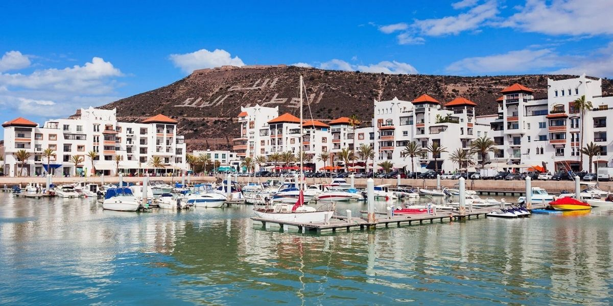

Agadir
Agadir
Souss-Massa

Agadir (Arabic: أكادير or Arabic: أݣادير or Arabic: أغادير, romanized: ʾagādīr; Tachelhit: ⴰⴳⴰⴷⵉⵔ, romanized: agadir) is a major city in Morocco, on the shore of the Atlantic Ocean near the foot of the Atlas Mountains, just north of the point where the Souss River flows into the ocean, and 509 kilometres (316 mi) south of Casablanca. Agadir is the capital of the Agadir Ida-U-Tanan Prefecture and of the Souss-Massa economic region. The majority of its inhabitants speak Berber, one of Morocco’s two official languages.
It was the site of the 1911 Agadir Crisis that exposed tensions between France and Germany,
Reservé